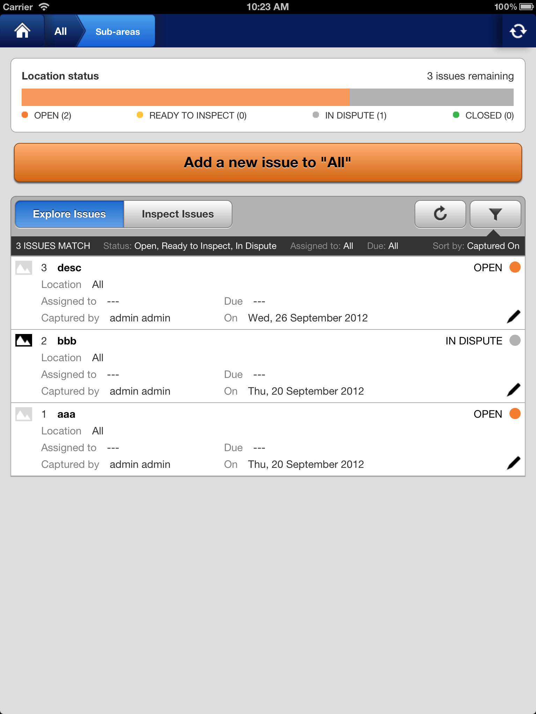
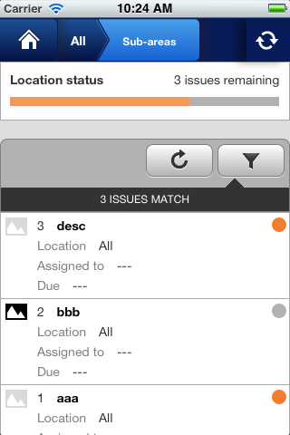
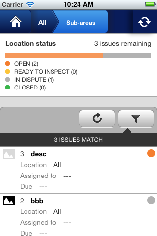

Why?
Real world example:
Collapsed areaStatusChart on iPhone, portrait/landscape behaviour, font sizes on pages/components, etc
  Component demo pages:
Triggering media queries:
Requirements:
Existing tools:
DEMO TIME!
$ grunt test:css:demo:auth*dialog
$ grunt test:css:compare:auth*dialog
// to run all
$ grunt test:css
$ grunt test:css:accept-images
Prototype:
Limitations: